【ベトナム一人旅 Day2】
「ホーチミン市内を満喫した一日！スパ体験も」

Trip Info
Place
ベトナム / ホーチミン
Date
2026.02.27〜03.02
Transport
飛行機・タクシー・バイクタクシー
皆様こんにちは。ミナです。
今回のノートは、私の海外一人旅デビューの記録です。
二日目は、ホーチミン市内の有名どころの観光名所を回っていきます。
※このノートでは、［1VND＝0.006円］で計算しています。
朝ご飯を食べに来ました。
確か観光雑誌に載っていたバインミーの有名店です。

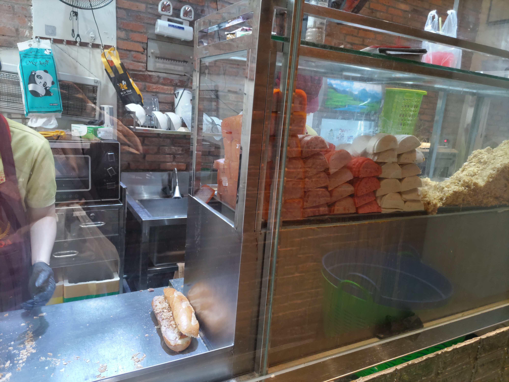
朝から列ができていました。デリバリー専用レーンもあるみたいです。
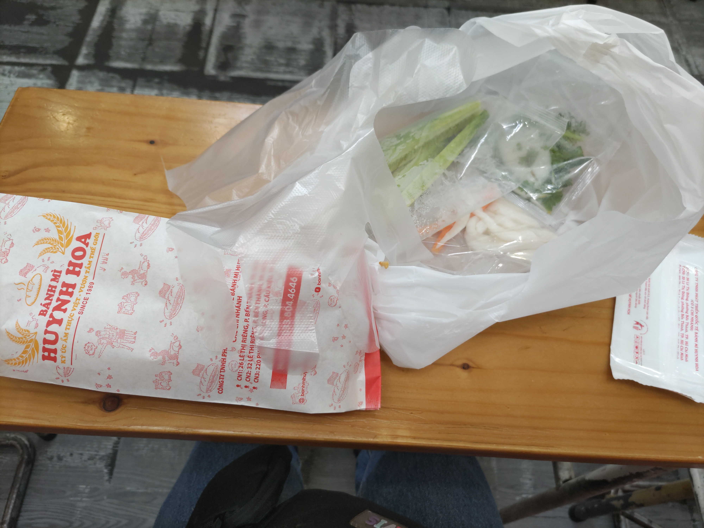
基本の具材はすでにパンに挟まっていますが、お好みで付け足す用の具材(キュウリとかなます的なやつとか)と、ビニール手袋が入ってました。
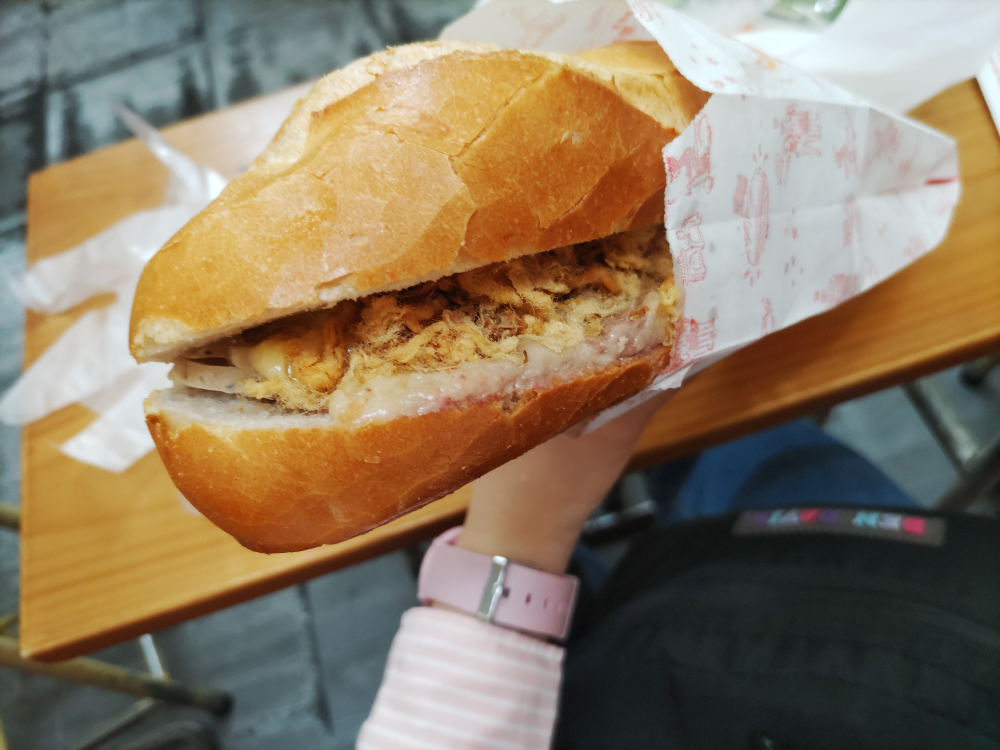
Huynh Hoa's Traditional banh mi(size L)〈78,000VND / 468円〉を注文。
本当はもう一つ下のサイズが良かったのですが、なんと売り切れてしまったとのことで、でかいサイズになってしまいました。
一人だと量が多すぎる笑。
味はとても美味しかったです。友達とシェアがちょうどよさそう。
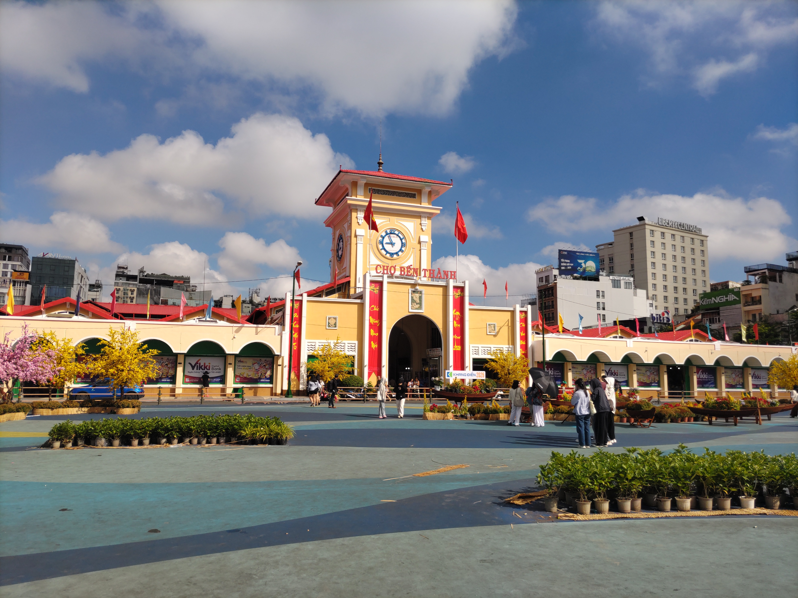
ホーチミンで有名な市場である「ベンタイン市場」に来ました。
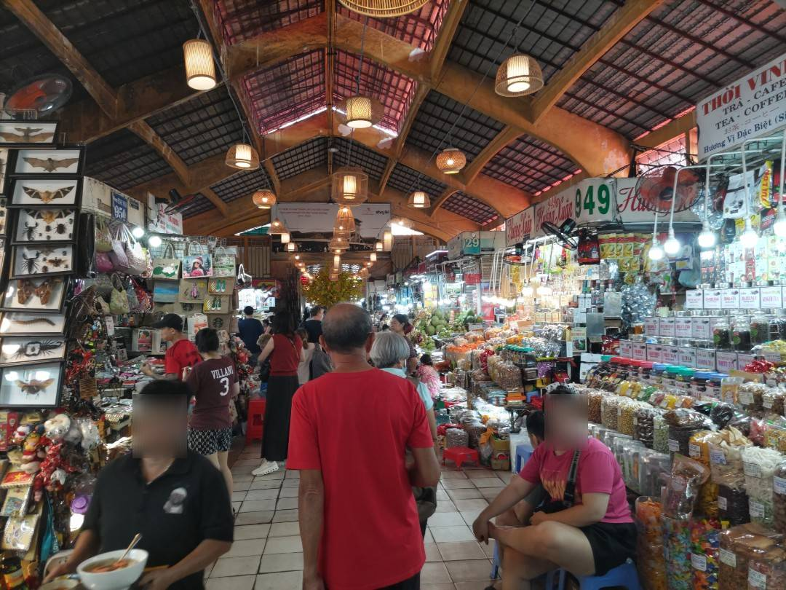
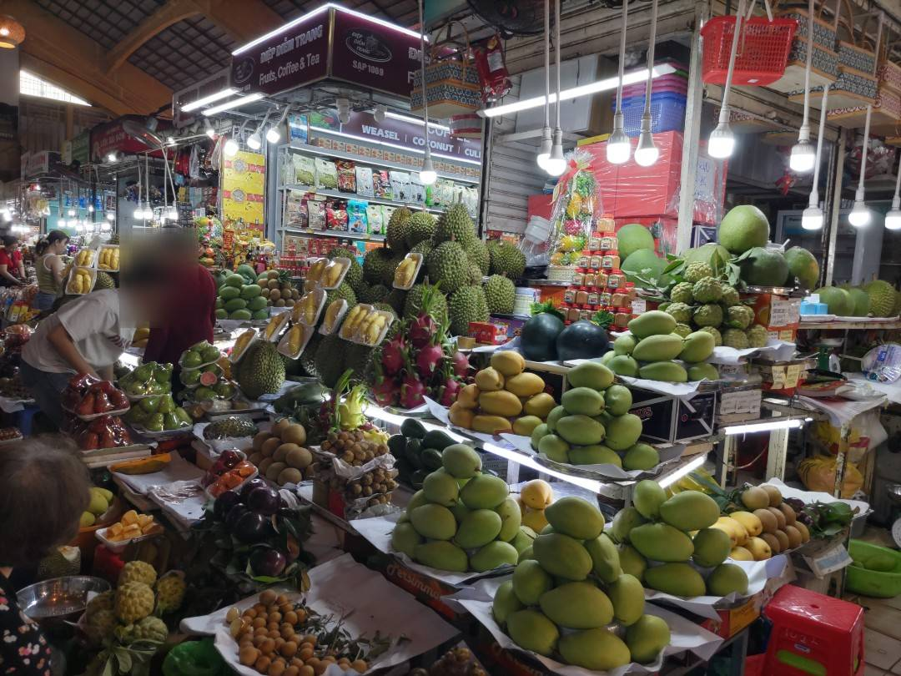
海外って感じがします。いろんなものがぎゅっとなっている。
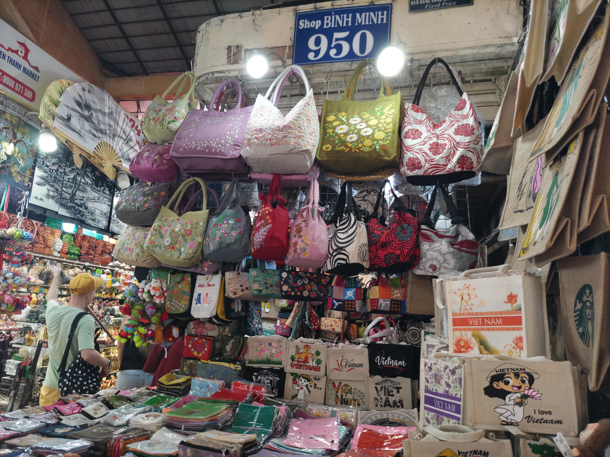
値段交渉とやらをしてみたかったので、高校の部活の同期にあげるお土産を兼ねて、こちらのお店で挑戦してみました！
もう桁が大きくて、交渉が上手くいってるのか、まだぼったくられてるのか瞬時に判断するのが難しいです。
ちなみにポーチの六個セットをゲットしました。
飲食店も中にあったので、ここでご飯を食べるのも良いかも。
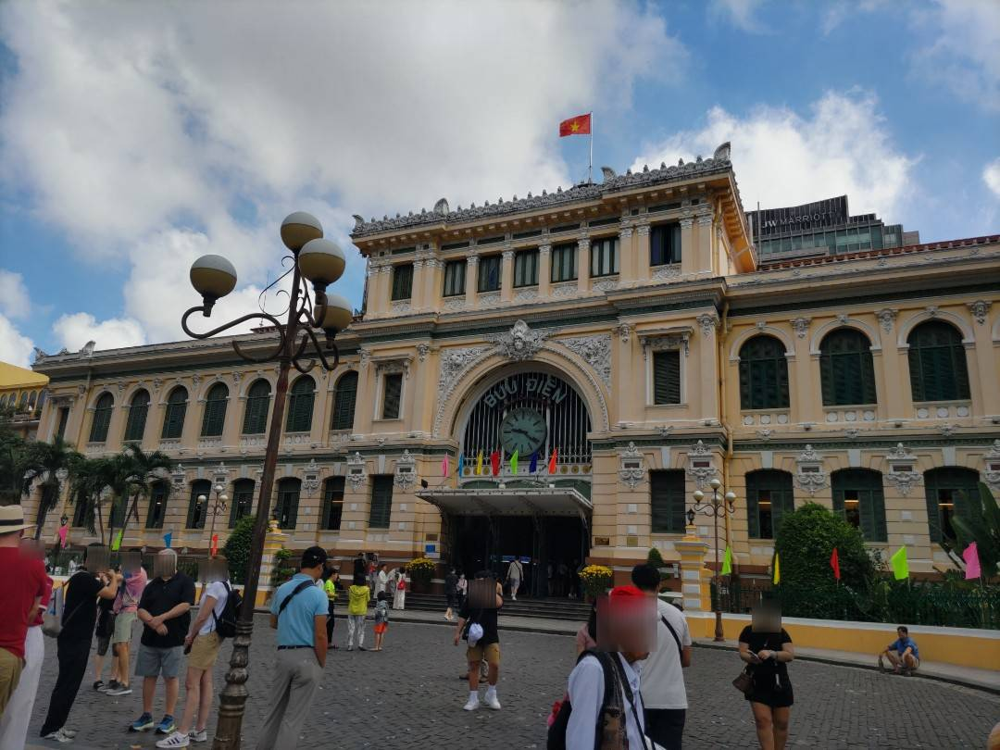
サイゴン中央郵便局はフランス植民地時代の建物で、フランスのオルセー美術館をモデルにしたコロニアル建築となっています。
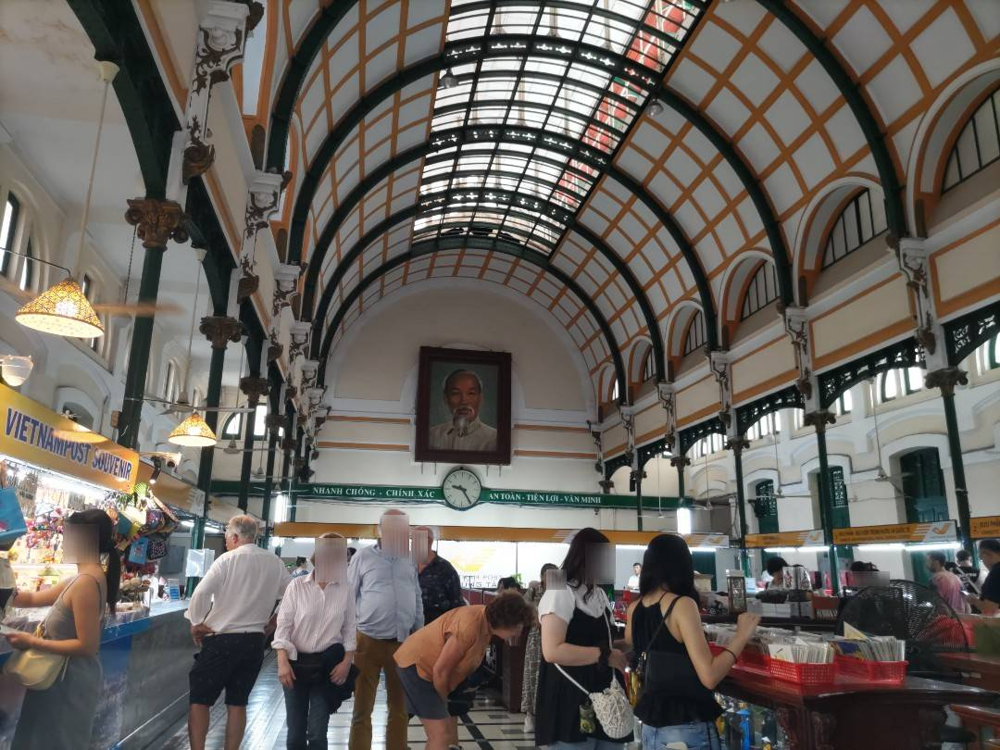
内部はこんな感じ。
奥にあるホーチミンさんの肖像画が目立っています。
中にはポストカードがずらりと並んでいます。
ちょっとしたお土産屋さんもありました。
私もお土産にポストカードを一枚購入しました。〈30,000VND / 180円〉
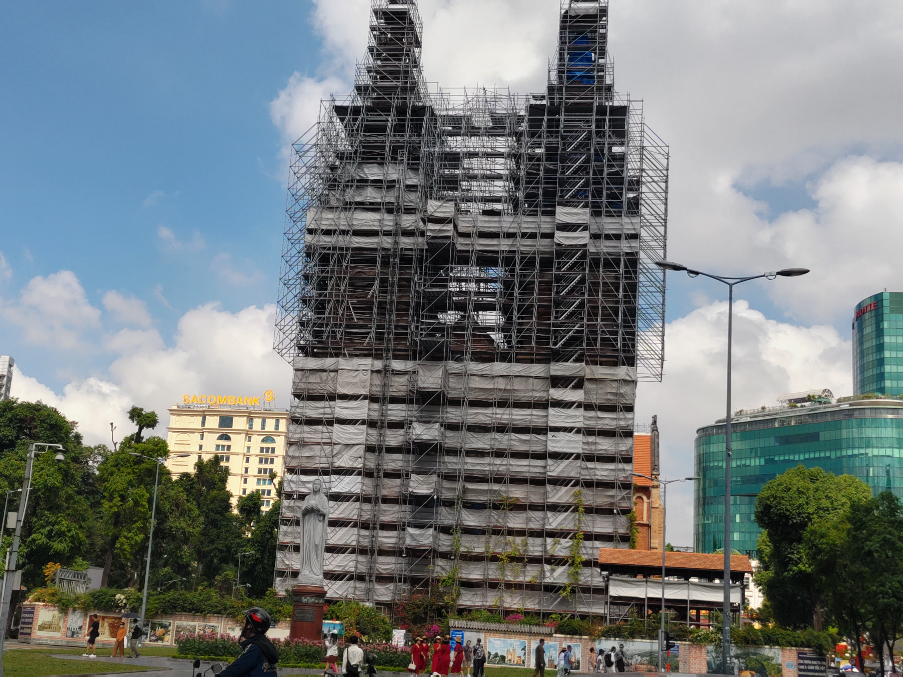
郵便局の目の前には有名な「サイゴン協会」もあるのですが、私が訪れたときには工事中で外観は見えませんでした涙
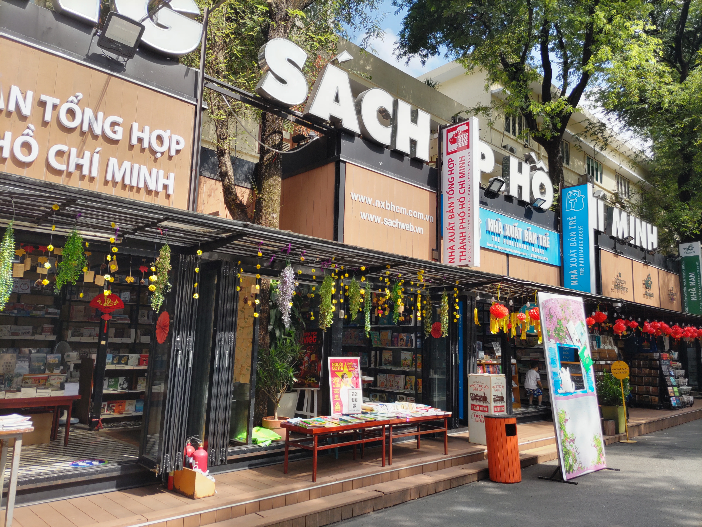
郵便局の近くの通りがブックストリート的な感じになっていました。
とても好きな雰囲気。
何か本を買えばよかったと後悔…。(ベトナム語わかんないけど)
ベトナムの有名カフェチェーン店の「ハイランズコーヒー」が近くにあったので入ってみました。
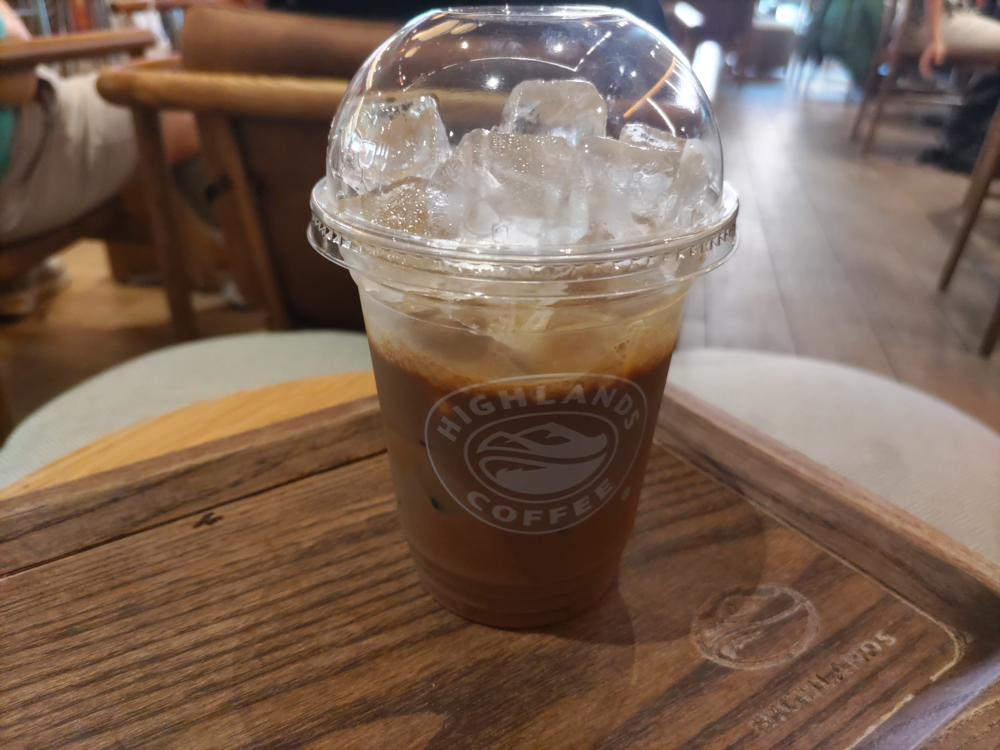
Phin sua da〈55,000 / 330円〉を注文。
皆さん知っていましたか？ベトナムのコーヒーってめっちゃ甘いんです。
コーヒーに練乳を入れるのがベトナムスタイルなのだそう。
私は甘党なので、とても美味しくいただけましたが、人によっては甘すぎるのかもしれません。
そういえば、ここの店員のお兄さんがめっちゃ気さくでよかったです。